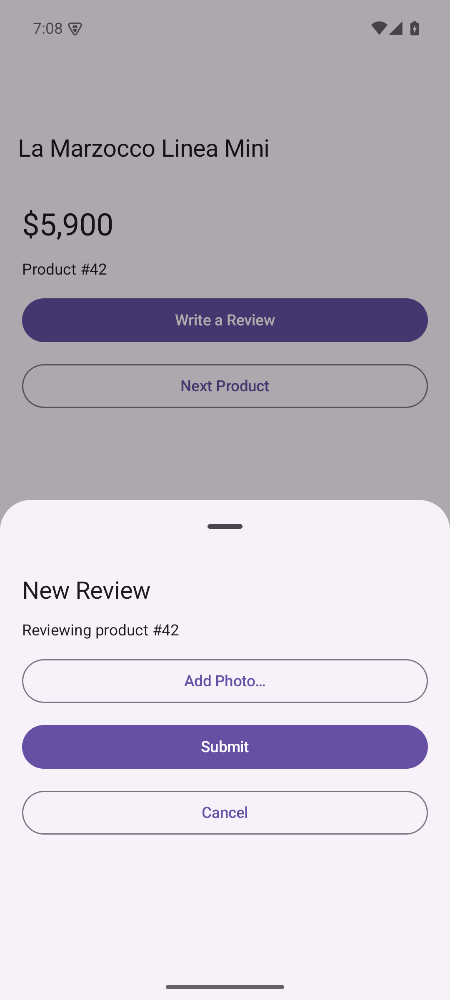
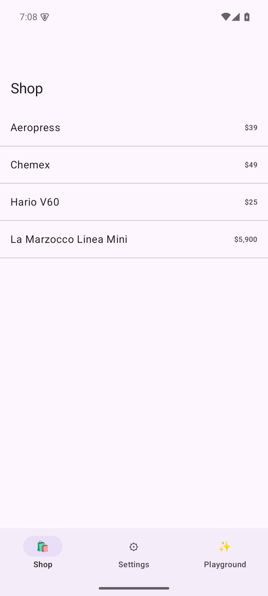
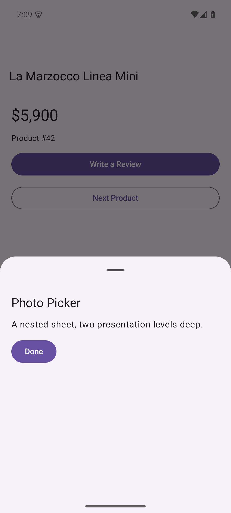
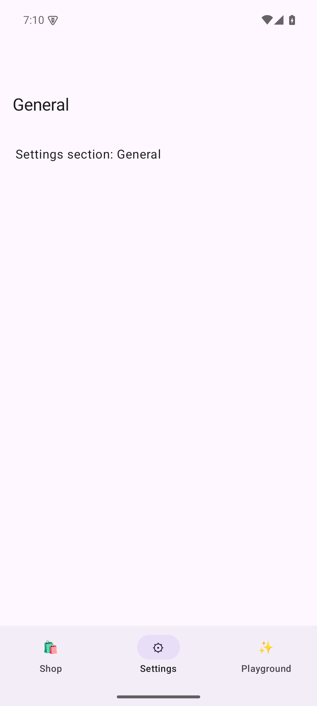

A programmatic router for Jetpack Compose: describe a destination across tabs, back stacks, list-detail panes, bottom sheets, and dialogs as one declarative intent. Deep links, system back, and state restoration ride the same tree — and because Compose materializes any state in a single pass, there's no staged executor to fight.
navigator.perform( navigationIntent { selectTab(AppTab.Shop) setStack(ProductRoute.List, ProductRoute.Detail(42)) present(ReviewRoute.Compose(42), BottomSheet()) push(ReviewRoute.PhotoPicker) alert("Arrived!") })

Every screen below is a real screenshot from sample-app on an Android 15
emulator — the binding layer rendering the state tree, driven by the same intents and deep links.



On iOS the hard part is that SwiftUI can't materialize nested presentations from a single state mutation — so the Swift package plans an intent into stages and awaits each UI transition. Compose has no such constraint: hand it any tree and it recomposes. The Android resolver applies an intent in one synchronous pass.
Plan → apply → await → repeat. A pure planner buckets the
intent into dismiss → base → present×N → overlay stages; the executor waits for
each real transition before the next. Nested sheets need one stage per level.
Apply, once. IntentResolver.resolve() mutates the
snapshot-backed tree in a single pass and Compose renders it. No stages, no awaiting, no
suspending calls — but the semantics (cursor walk, dismissal rules, activate) are
preserved verbatim, so the same intent yields the same end state on both platforms.
Each window owns one recursive tree of @Observable-style snapshot state.
A bottom sheet's content is itself a full NavigationContext, so nested presentations
are just a deeper tree. Back stacks are plain SnapshotStateList<Route> — the
renderer treats them exactly as Navigation 3 asks you to: you own the list.
@Serializable sealed types implement Route. Kotlin's polymorphic
serialization does the type-erasure and decoding registry job that Swift needed
AnyRoute for — @SerialName is the stable id.
TabsLayout, SplitLayout, and stacks nest freely — a tab can host a
list-detail split, a split's detail is a full stack. Selections and paths are all observable.
Because paths are real lists, the resolver can read them: pop-to-existing, "which window shows this route", and diffing are queries, not hacks.
The one navigation concern Android has that iOS doesn't. Rather than scatter
BackHandlers across screens, goBack() resolves one rule against the tree,
deepest-first. Press ◁ Back to watch it unwind.
A five-level tree: Shop tab → a pushed detail → the review sheet → a nested photo-picker sheet → an alert on top. Each Back consumes the deepest level first.
A feature maps its routes to composables and knows nothing about the app shell or
its siblings — the counterpart of the Swift package's RoutableFeature. On Android the
idiomatic wiring is DI multibindings; the builder is the manual equivalent. Screens see one API:
LocalNavigator.
@Serializablesealed interface ProductRoute : Route { @Serializable data object List : ProductRoute @Serializable data class Detail(val id: Int) : ProductRoute} object ProductsFeature : RoutableFeature { override fun destinations(b: DestinationRegistryBuilder) = with(b) { destination<ProductRoute.List> { ProductListScreen() } destination<ProductRoute.Detail> { ProductDetailScreen(it.id) } }}
@Composablefun ProductDetailScreen(id: Int) { val navigator = LocalNavigator.current Button(onClick = { // cross-feature; presents as a sheet because // Reviews registered that default placement navigator.navigate(ReviewRoute.Compose(id)) }) { Text("Write a Review") }}
val registry = destinationRegistry { feature(ProductsFeature); feature(ReviewsFeature) feature(SettingsFeature); feature(PlaygroundFeature)}val navigator = Navigator(ShopComposition.newScene(), registry) setContent { MaterialTheme { RoutedScene(navigator) } // renders + wires back}
val deepLinks = deepLinkMap { pattern("/products/:id/review") { p -> val id = p.int("id") // typed, throwing navigationIntent { selectTab(AppTab.Shop) setStack(ProductRoute.List, ProductRoute.Detail(id)) present(ReviewRoute.Compose(id)) } } pattern("/settings/**") { navigationIntent { selectTab(AppTab.Settings) } }}
Custom-scheme URLs are normalized so shopapp://products/42 and an App Link share one
pattern; most-specific match wins; a handler that throws (malformed id) falls through. Cold launch
is handled — a URL arriving before any scene exists is parked and claimed by the first to register.
Two things live under “dismissal”: explicitly closing what's open, and what gets torn down when you navigate elsewhere.
The navigator does it directly — no state to hoist into your composables:
navigator.dismiss() // close the topmost sheet / full-screen / dialognavigator.dismissAll() // tear down every presentation, back to the base contextnavigator.pop() // step back one screen in the stacknavigator.popToRoot() // … all the way to the stack root
Sheets also dismiss interactively —
a swipe-down or scrim tap mutates the same snapshot state — and system back
(goBack()) unwinds the whole tree deepest-first, exactly as the stepper above shows.
Block interactive dismissal per presentation with BottomSheet(dismissible = false).
Inside a navigationIntent { } the same verbs are dismiss(),
dismissAll(), pop(), and popToRoot().
navigate(route, placement) resolves placement as: explicit argument →
the route type's registered default → Push.
| Placement | Behavior |
|---|---|
Push | Push onto the deepest active context — the sheet's stack if a sheet is up. |
ReplaceStack | Replace the active context's back stack with just this route. |
Present(style) | Present over the active context — a bottom sheet or a full-screen modal. |
ActivateExisting(else) | If the route is anywhere in the scene, reveal it: select its tab, dismiss what covers it, pop to it. Otherwise apply the fallback. |
The whole core — tree, resolver, deep-link matching, back handling, restoration — runs headlessly on the JVM. The 38 tests are ported one-for-one from the Swift package's suite, so a deep link written once is provably identical on iOS and Android without a simulator or emulator in sight.
val scene = blueprint.newScene()val intent = deepLinks.intentFor("shopapp://products/42/review")!! IntentResolver.resolve(intent, scene) assertEquals(ProductRoute.Detail(42), scene.baseContext.backStack.last())assertEquals(ReviewRoute.Compose(42), scene.baseContext.sheet?.content?.root)